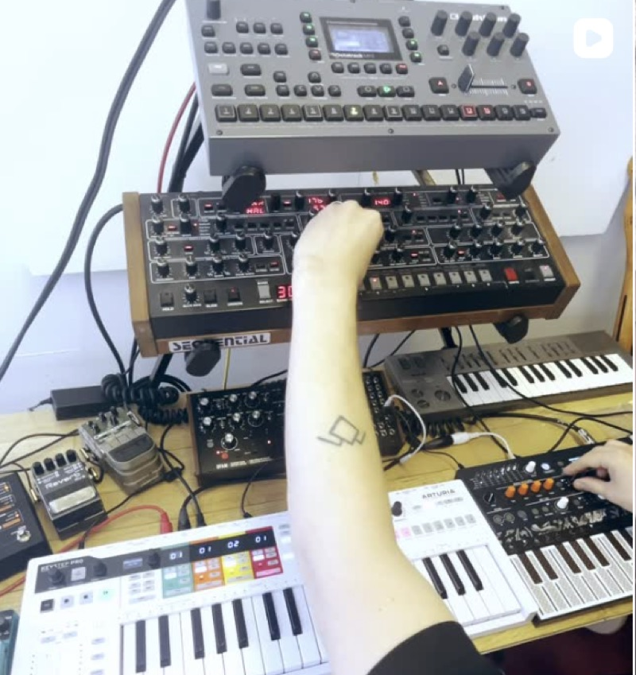
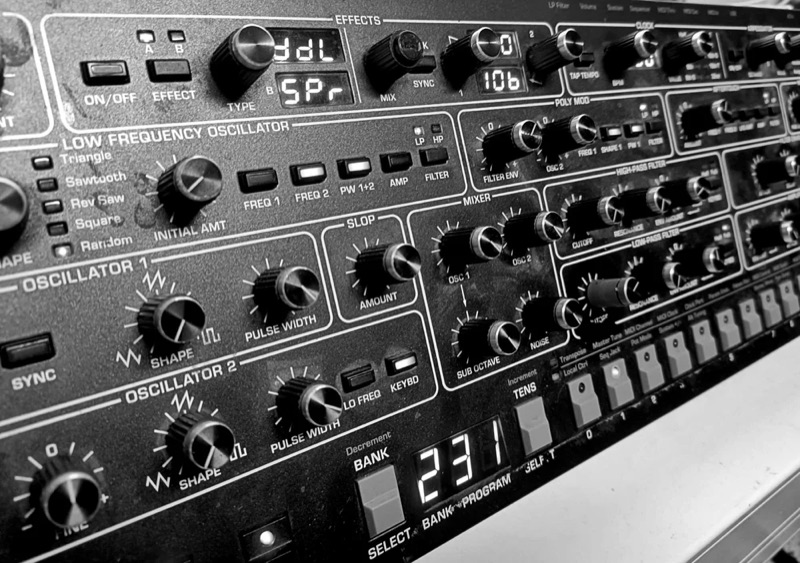
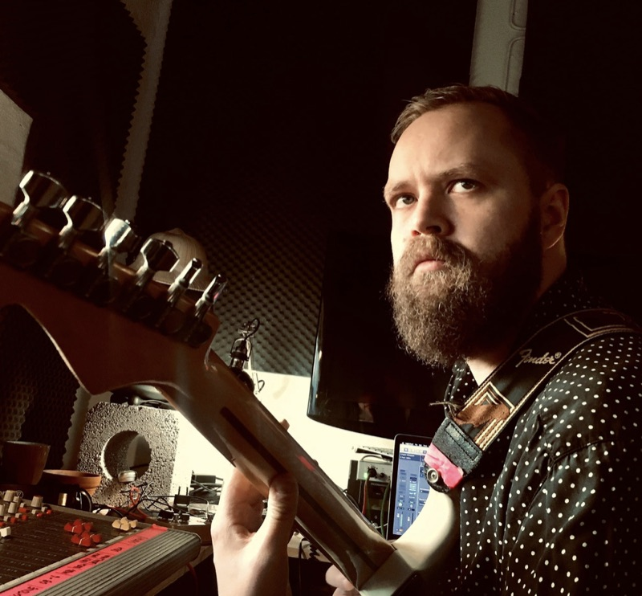

Music Production
I produce music across different genres and without
limits of the concept, so it can be for artists, ads,
films, or any creative project.
From clean mixes to full-on production, I can make
sure every sound hits just right.

Sound Design
Over the years I’ve created sound design for games,
theater, ads, films, art performances and pretty much
anything that needs a unique sound.
Got a project in mind? Let’s make it sound amazing.

Guitar Lessons
I teach beginners and advanced players of all ages.
Been doing this for years, so I’ll help you learn
the basics, get better technique, or learn some
killer solos.
We can have the sessions in my studio at Vuosaari,
Helsinki. Hit me up and let’s jam!
Starting from 45 € / 45 min
Programming
I'm currently studying programming and exploring how
coding can be used to create websites, software, and
other digital tools.
This website is made by me using HTML, CSS, and JavaScript.